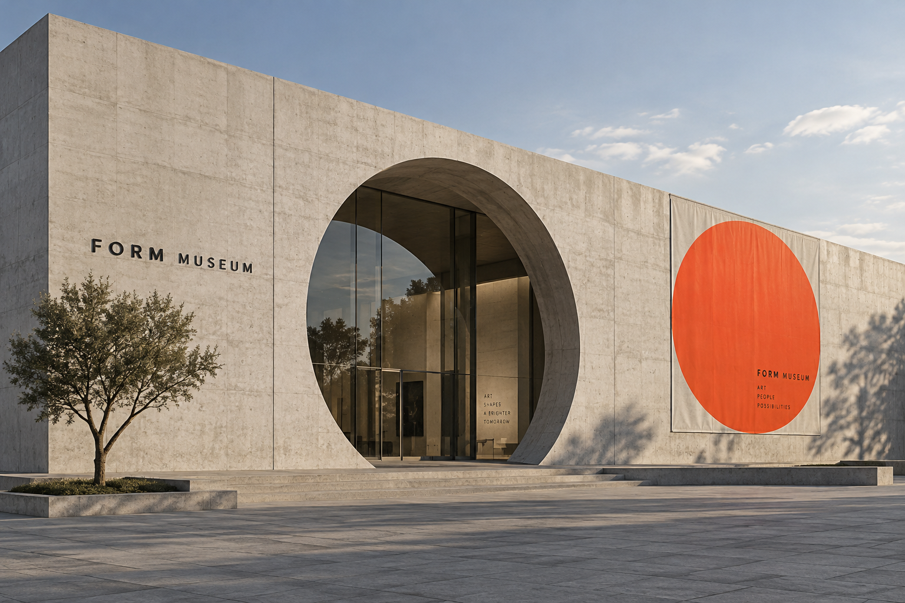

FORM MUSEUM ↗
CONCEPT PROJECT / 01
FORM
MUSEUMArt & ideas
Open to everyone
MUSEUMArt & ideas
Open to everyone
A different
way to see.
way to see.
FORM
IN MOTION
IN MOTION
EXHIBITIONS
Between shapesDISCOVER
THE PROGRAMME
Between shapesDISCOVER
THE PROGRAMME
An open circle invites visitors in, from the museum entrance to its exhibition programme.